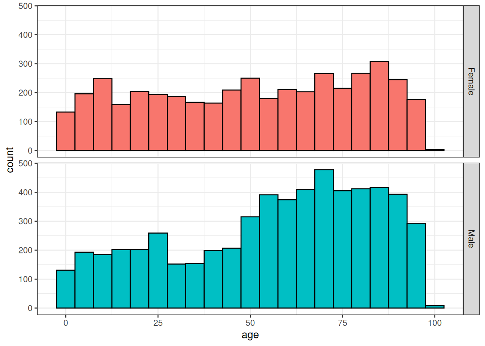
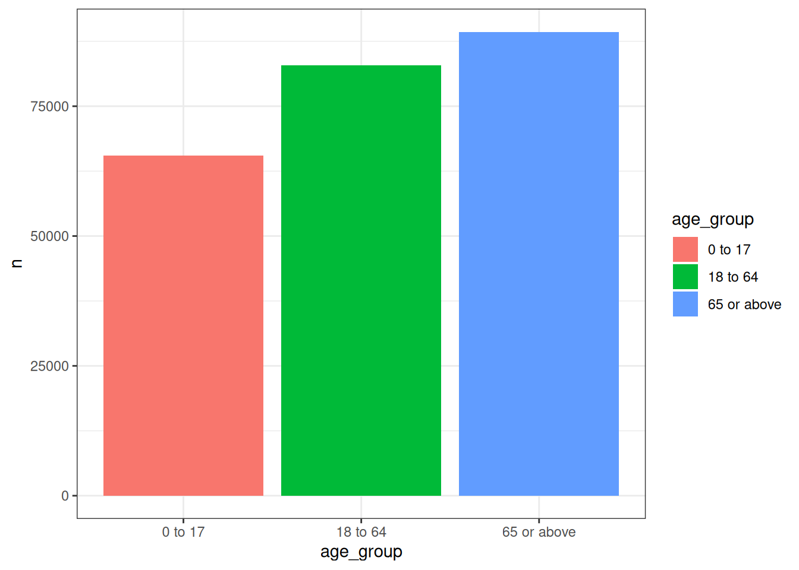
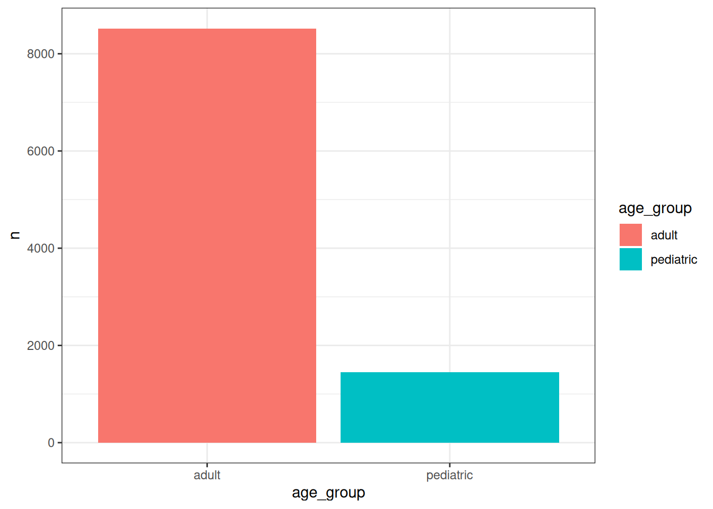

library(dplyr)
library(omock)
library(PatientProfiles)
library(ggplot2)
library(omopgenerics) # TODO https://github.com/OHDSI/omock/issues/189 7 Identifying patient characteristics
For this chapter, we’ll again use our example COVID-19 dataset.
cdm <- mockCdmFromDataset(datasetName = "synthea-covid19-10k", source = "duckdb")ℹ Reading synthea-covid19-10k tables.
ℹ Adding drug_strength table.As part of an analysis, we almost always have a need to identify certain characteristics related to the individuals in our data. These characteristics might be time-invariant (i.e. a characteristic that does not change as time passes and a person ages) or time-varying.1
7.1 Adding specific demographics
The PatientProfiles package makes it easy for us to add demographic information to tables in the OMOP CDM. Like the CDMConnector package we’ve seen previously, the fact that the structure of the OMOP CDM is known allows the PatientProfiles package to abstract away some common data manipulations required to do research with patient-level data.2
Let’s say we’re interested in individuals’ age and sex at the time of COVID-19 diagnosis. We can add these variables to the table as follows (noting that, since age is time-varying, we need to specify the date relative to which it should be calculated).
cdm$condition_occurrence <- cdm$condition_occurrence |>
addSex() |>
addAge(indexDate = "condition_start_date")
cdm$condition_occurrence |>
glimpse()Rows: ??
Columns: 18
Database: DuckDB 1.4.1 [unknown@Linux 6.11.0-1018-azure:R 4.4.1//tmp/RtmpAgNNqt/file316b27bbf874.duckdb]
$ condition_occurrence_id <int> 1, 2, 3, 4, 5, 6, 7, 8, 9, 10, 11, 12, 1…
$ person_id <int> 2, 6, 7, 8, 8, 8, 8, 16, 16, 18, 18, 25,…
$ condition_concept_id <int> 381316, 321042, 381316, 37311061, 437663…
$ condition_start_date <date> 1986-09-08, 2021-06-23, 2021-04-07, 202…
$ condition_start_datetime <dttm> 1986-09-08, 2021-06-23, 2021-04-07, 202…
$ condition_end_date <date> 1986-09-08, 2021-06-23, 2021-04-07, 202…
$ condition_end_datetime <dttm> 1986-09-08, 2021-06-23, 2021-04-07, 202…
$ condition_type_concept_id <int> 38000175, 38000175, 38000175, 38000175, …
$ condition_status_concept_id <int> 0, 0, 0, 0, 0, 0, 0, 0, 0, 0, 0, 0, 0, 0…
$ stop_reason <chr> NA, NA, NA, NA, NA, NA, NA, NA, NA, NA, …
$ provider_id <int> NA, NA, NA, NA, NA, NA, NA, NA, NA, NA, …
$ visit_occurrence_id <int> 19, 55, 67, 79, 79, 79, 79, 168, 171, 19…
$ visit_detail_id <int> 1000019, 1000055, 1000067, 1000079, 1000…
$ condition_source_value <chr> "230690007", "410429000", "230690007", "…
$ condition_source_concept_id <int> 381316, 321042, 381316, 37311061, 437663…
$ condition_status_source_value <chr> NA, NA, NA, NA, NA, NA, NA, NA, NA, NA, …
$ sex <chr> "Female", "Male", "Male", "Male", "Male"…
$ age <int> 57, 25, 97, 2, 2, 2, 2, 75, 77, 57, 76, …We have now added two variables containing values for age and sex.
cdm$condition_occurrence |>
glimpse()Rows: ??
Columns: 18
Database: DuckDB 1.4.1 [unknown@Linux 6.11.0-1018-azure:R 4.4.1//tmp/RtmpAgNNqt/file316b27bbf874.duckdb]
$ condition_occurrence_id <int> 1, 2, 3, 4, 5, 6, 7, 8, 9, 10, 11, 12, 1…
$ person_id <int> 2, 6, 7, 8, 8, 8, 8, 16, 16, 18, 18, 25,…
$ condition_concept_id <int> 381316, 321042, 381316, 37311061, 437663…
$ condition_start_date <date> 1986-09-08, 2021-06-23, 2021-04-07, 202…
$ condition_start_datetime <dttm> 1986-09-08, 2021-06-23, 2021-04-07, 202…
$ condition_end_date <date> 1986-09-08, 2021-06-23, 2021-04-07, 202…
$ condition_end_datetime <dttm> 1986-09-08, 2021-06-23, 2021-04-07, 202…
$ condition_type_concept_id <int> 38000175, 38000175, 38000175, 38000175, …
$ condition_status_concept_id <int> 0, 0, 0, 0, 0, 0, 0, 0, 0, 0, 0, 0, 0, 0…
$ stop_reason <chr> NA, NA, NA, NA, NA, NA, NA, NA, NA, NA, …
$ provider_id <int> NA, NA, NA, NA, NA, NA, NA, NA, NA, NA, …
$ visit_occurrence_id <int> 19, 55, 67, 79, 79, 79, 79, 168, 171, 19…
$ visit_detail_id <int> 1000019, 1000055, 1000067, 1000079, 1000…
$ condition_source_value <chr> "230690007", "410429000", "230690007", "…
$ condition_source_concept_id <int> 381316, 321042, 381316, 37311061, 437663…
$ condition_status_source_value <chr> NA, NA, NA, NA, NA, NA, NA, NA, NA, NA, …
$ sex <chr> "Female", "Male", "Male", "Male", "Male"…
$ age <int> 57, 25, 97, 2, 2, 2, 2, 75, 77, 57, 76, …With these now added, it is straightforward to calculate the mean age at condition start date by sex or even plot the distribution of age at diagnosis by sex.
cdm$condition_occurrence |>
group_by(sex) |>
summarise(mean_age = mean(age, na.rm=TRUE)) |>
collect()# A tibble: 2 × 2
sex mean_age
<chr> <dbl>
1 Female 50.8
2 Male 56.5cdm$condition_occurrence |>
select("person_id", "age", "sex") |>
collect() |>
ggplot(aes(fill = sex)) +
facet_grid(sex ~ .) +
geom_histogram(aes(age), colour = "black", binwidth = 5) +
theme_bw() +
theme(legend.position = "none")
NoteShow query
cdm$condition_occurrence |>
addSexQuery() |>
show_query()Warning: ! The following columns will be overwritten: sex<SQL>
SELECT
condition_occurrence_id,
og_002_1761234176.person_id AS person_id,
condition_concept_id,
condition_start_date,
condition_start_datetime,
condition_end_date,
condition_end_datetime,
condition_type_concept_id,
condition_status_concept_id,
stop_reason,
provider_id,
visit_occurrence_id,
visit_detail_id,
condition_source_value,
condition_source_concept_id,
condition_status_source_value,
age,
RHS.sex AS sex
FROM og_002_1761234176
LEFT JOIN (
SELECT
person_id,
CASE
WHEN (gender_concept_id = 8507.0) THEN 'Male'
WHEN (gender_concept_id = 8532.0) THEN 'Female'
ELSE 'None'
END AS sex
FROM person
) RHS
ON (og_002_1761234176.person_id = RHS.person_id)The difference between addSexQuery() and addSex() is explained in the next tip chunk.
7.2 Adding multiple demographics simultaneously
We’ve now seen individual functions from PatientProfiles that add specific patient characteristics such as age and sex. The package also includes functions to add other characteristics, such as the number of days of prior observation in the database (rather unimaginatively named addPriorObservation()). In addition to these individual functions, the package also provides a more general function that retrieves all of these characteristics at the same time.3
cdm$drug_exposure <- cdm$drug_exposure |>
addDemographics(
indexDate = "drug_exposure_start_date",
age = TRUE,
sex = TRUE,
priorObservation = TRUE,
futureObservation = TRUE,
dateOfBirth = TRUE
)
cdm$drug_exposure |>
glimpse()Rows: ??
Columns: 28
Database: DuckDB 1.4.1 [unknown@Linux 6.11.0-1018-azure:R 4.4.1//tmp/RtmpAgNNqt/file316b27bbf874.duckdb]
$ drug_exposure_id <int> 122881, 122882, 122883, 122884, 122885, 1…
$ person_id <int> 3880, 3880, 3880, 3880, 3880, 3880, 3880,…
$ drug_concept_id <int> 40213198, 40213281, 40213198, 40213281, 4…
$ drug_exposure_start_date <date> 2015-07-03, 2015-07-03, 2015-07-03, 2015…
$ drug_exposure_start_datetime <dttm> 2015-07-03 21:19:06, 2015-07-03 21:19:06…
$ drug_exposure_end_date <date> 2015-07-03, 2015-07-03, 2015-07-03, 2015…
$ drug_exposure_end_datetime <dttm> 2015-07-03 21:19:06, 2015-07-03 21:19:06…
$ verbatim_end_date <date> 2015-07-03, 2015-07-03, 2015-07-03, 2015…
$ drug_type_concept_id <int> 32869, 32869, 32869, 32869, 32869, 32869,…
$ stop_reason <chr> NA, NA, NA, NA, NA, NA, NA, NA, NA, NA, N…
$ refills <int> 0, 0, 0, 0, 0, 0, 0, 0, 0, 0, 0, 0, 0, 0,…
$ quantity <dbl> 0, 0, 0, 0, 0, 0, 0, 0, 0, 0, 0, 0, 0, 0,…
$ days_supply <int> 0, 0, 0, 0, 0, 0, 0, 0, 0, 0, 0, 0, 0, 0,…
$ sig <chr> NA, NA, NA, NA, NA, NA, NA, NA, NA, NA, N…
$ route_concept_id <int> 0, 0, 0, 0, 0, 0, 0, 0, 0, 0, 0, 0, 0, 0,…
$ lot_number <chr> "0", "0", "0", "0", "0", "0", "0", "0", "…
$ provider_id <int> 1266, 1266, 1260, 1260, 1258, 1258, 1268,…
$ visit_occurrence_id <int> 40394, 40394, 40394, 40394, 40394, 40394,…
$ visit_detail_id <int> 1040394, 1040394, 1040394, 1040394, 10403…
$ drug_source_value <chr> "133", "20", "133", "20", "133", "20", "1…
$ drug_source_concept_id <int> 40213198, 40213281, 40213198, 40213281, 4…
$ route_source_value <chr> NA, NA, NA, NA, NA, NA, NA, NA, NA, NA, N…
$ dose_unit_source_value <chr> NA, NA, NA, NA, NA, NA, NA, NA, NA, NA, N…
$ age <int> 0, 0, 0, 0, 0, 0, 7, 6, 4, 2, 1, 7, 6, 4,…
$ sex <chr> "Male", "Male", "Male", "Male", "Male", "…
$ prior_observation <int> 252, 252, 252, 252, 252, 252, 2919, 2548,…
$ future_observation <int> 2667, 2667, 2667, 2667, 2667, 2667, 0, 37…
$ date_of_birth <date> 2014-10-24, 2014-10-24, 2014-10-24, 2014…With these characteristics added, we can now calculate mean age, prior observation (the number of days have passed since each individual’s most recent observation start date), and future observation (the number of days until the individual’s nearest observation end date) at drug exposure start date, stratified by sex.
cdm$drug_exposure |>
group_by(sex) |>
summarise(mean_age = mean(age, na.rm=TRUE),
mean_prior_observation = mean(prior_observation, na.rm=TRUE),
mean_future_observation = mean(future_observation, na.rm=TRUE)) |>
collect()# A tibble: 2 × 4
sex mean_age mean_prior_observation mean_future_observation
<chr> <dbl> <dbl> <dbl>
1 Male 43.0 2455. 1768.
2 Female 39.4 2096. 1661.
TipReturning a query from
PatientProfiles rather than the result
In the above examples, the functions from PatientProfiles execute queries and write the results to a table in the database (either a temporary table if no name is provided when calling the function, or a permanent table). We might instead want to just get the underlying query back so that we have more control over how and when the query is executed.
cdm$visit_occurrence |>
addSex() |>
filter(sex == "Male") |>
show_query()<SQL>
SELECT og_004_1761234178.*
FROM og_004_1761234178
WHERE (sex = 'Male')cdm$visit_occurrence |>
addSex(name = "my_new_table") |>
filter(sex == "Male") |>
show_query()<SQL>
SELECT test_my_new_table.*
FROM results.test_my_new_table
WHERE (sex = 'Male')cdm$visit_occurrence |>
addSexQuery() |>
filter(sex == "Male") |>
show_query()<SQL>
SELECT q01.*
FROM (
SELECT visit_occurrence.*, sex
FROM visit_occurrence
LEFT JOIN (
SELECT
person_id,
CASE
WHEN (gender_concept_id = 8507.0) THEN 'Male'
WHEN (gender_concept_id = 8532.0) THEN 'Female'
ELSE 'None'
END AS sex
FROM person
) RHS
ON (visit_occurrence.person_id = RHS.person_id)
) q01
WHERE (sex = 'Male')Query functions can be useful in some contexts where you don’t want to generate multiple temporary tables or do not want to lose indexes of a certain table, but they can also generate large queries that could result in low performance.
7.3 Creating categories
When adding age, either via addAge or addDemographics, we can also include an additional variable that groups individuals into age categories. These age groups must be specified in a list of vectors, each of which containing the lower and upper bounds.
cdm$visit_occurrence <- cdm$visit_occurrence |>
addAge(
indexDate = "visit_start_date",
ageGroup = list(c(0,17), c(18, 64), c(65, Inf))
)
cdm$visit_occurrence |>
# data quality issues with our synthetic data means we have
# some negative ages so will drop these
filter(age >= 0) |>
group_by(age_group) |>
tally() |>
collect() |>
ggplot() +
geom_col(aes(x = age_group, y = n, fill = age_group)) +
theme_bw()
TipNaming age groups
As we have seen, by default the age groups are named according to their lower and upper bounds (‘0 to 17’, ‘18 to 64’, and ‘65 or above’). However, we can customise these labels by assigning names to the list of age groups:
cdm$condition_occurrence |>
addAgeQuery(
indexDate = "condition_start_date",
ageGroup = list("pediatric" = c(0,17), "adult" = c(18, Inf))
) |>
filter(age >= 0) |>
group_by(age_group) |>
tally() |>
collect() |>
ggplot() +
geom_col(aes(x = age_group, y = n, fill = age_group)) +
theme_bw()Warning: ! The following columns will be overwritten: age
If you take a close look at the documentation of the function, you’ll see that it also allows you to add multiple age groups and to control the name of the new column, which by default is ‘age_group’.
PatientProfiles also provides a more general function for adding categories. Can you guess its name? That’s right, we have addCategories() for this.
cdm$condition_occurrence |>
addPriorObservation(indexDate = "condition_start_date") |>
addCategories(
variable = "prior_observation",
categories = list("prior_observation_group" = list(
c(0, 364), c(365, Inf)
))
) |>
glimpse()Rows: ??
Columns: 20
Database: DuckDB 1.4.1 [unknown@Linux 6.11.0-1018-azure:R 4.4.1//tmp/RtmpAgNNqt/file316b27bbf874.duckdb]
$ condition_occurrence_id <int> 1, 2, 3, 4, 5, 6, 7, 8, 9, 10, 11, 12, 1…
$ person_id <int> 2, 6, 7, 8, 8, 8, 8, 16, 16, 18, 18, 25,…
$ condition_concept_id <int> 381316, 321042, 381316, 37311061, 437663…
$ condition_start_date <date> 1986-09-08, 2021-06-23, 2021-04-07, 202…
$ condition_start_datetime <dttm> 1986-09-08, 2021-06-23, 2021-04-07, 202…
$ condition_end_date <date> 1986-09-08, 2021-06-23, 2021-04-07, 202…
$ condition_end_datetime <dttm> 1986-09-08, 2021-06-23, 2021-04-07, 202…
$ condition_type_concept_id <int> 38000175, 38000175, 38000175, 38000175, …
$ condition_status_concept_id <int> 0, 0, 0, 0, 0, 0, 0, 0, 0, 0, 0, 0, 0, 0…
$ stop_reason <chr> NA, NA, NA, NA, NA, NA, NA, NA, NA, NA, …
$ provider_id <int> NA, NA, NA, NA, NA, NA, NA, NA, NA, NA, …
$ visit_occurrence_id <int> 19, 55, 67, 79, 79, 79, 79, 168, 171, 19…
$ visit_detail_id <int> 1000019, 1000055, 1000067, 1000079, 1000…
$ condition_source_value <chr> "230690007", "410429000", "230690007", "…
$ condition_source_concept_id <int> 381316, 321042, 381316, 37311061, 437663…
$ condition_status_source_value <chr> NA, NA, NA, NA, NA, NA, NA, NA, NA, NA, …
$ sex <chr> "Female", "Male", "Male", "Male", "Male"…
$ age <int> 57, 25, 97, 2, 2, 2, 2, 75, 77, 57, 76, …
$ prior_observation <int> 3437, 2898, 2842, 872, 872, 872, 872, 23…
$ prior_observation_group <chr> "365 or above", "365 or above", "365 or …7.4 Adding custom variables
While PatientProfiles provides a range of functions that can help you add characteristics of interest, you may also want to add other features. Obviously, we can’t cover here all possible custom characteristics you may wish to add. However, two common groups of custom features are those that are derived from other variables in the same table and others that are taken from other tables and joined to our particular table of interest.
In the first case, where we want to add a new variable derived from existing variables within our table, we’ll typically use mutate() (from the dplyr package). For example, perhaps we just want to add a new variable to our observation period table that contains the year of each individual’s observation period start date. This is rather straightforward.
cdm$observation_period <- cdm$observation_period |>
mutate(observation_period_start_year = get_year(observation_period_start_date))
cdm$observation_period |>
glimpse()Rows: ??
Columns: 6
Database: DuckDB 1.4.1 [unknown@Linux 6.11.0-1018-azure:R 4.4.1//tmp/RtmpAgNNqt/file316b27bbf874.duckdb]
$ observation_period_id <int> 1, 2, 3, 4, 5, 6, 7, 8, 9, 10, 11, 12, 1…
$ person_id <int> 1, 2, 3, 4, 5, 6, 7, 8, 9, 10, 11, 12, 1…
$ observation_period_start_date <date> 2014-05-09, 1977-04-11, 2014-04-19, 201…
$ observation_period_end_date <date> 2023-05-12, 1986-09-15, 2023-04-22, 202…
$ period_type_concept_id <int> 44814724, 44814724, 44814724, 44814724, …
$ observation_period_start_year <dbl> 2014, 1977, 2014, 2014, 2013, 2013, 2013…The second case is usually a more complex task, as adding a new variable involves joining to some other table following a certain logic. This table may have been created by some intermediate query that we wrote to derive the variable of interest. For example, let’s say we want to add the number of condition occurrence records for each individual to the person table (remember that we saw how to calculate this in the previous chapter). To do this, we will need to perform a join between the person and condition occurrence tables (as some people might not have any records in the condition occurrence table). Here we’ll create a table containing just the information we’re interested in and compute it to a temporary table.
condition_summary <- cdm$person |>
select("person_id") |>
left_join(
cdm$condition_occurrence |>
group_by(person_id) |>
count(name = "condition_occurrence_records"),
by="person_id"
) |>
select("person_id", "condition_occurrence_records") |>
mutate(condition_occurrence_records = coalesce(condition_occurrence_records, 0)) |>
compute()
condition_summary |>
glimpse()Rows: ??
Columns: 2
Database: DuckDB 1.4.1 [unknown@Linux 6.11.0-1018-azure:R 4.4.1//tmp/RtmpAgNNqt/file316b27bbf874.duckdb]
$ person_id <int> 2, 6, 7, 8, 16, 18, 25, 36, 40, 42, 44, 4…
$ condition_occurrence_records <dbl> 1, 1, 1, 4, 2, 2, 1, 4, 1, 3, 2, 5, 1, 3,…We can see what goes on behind the scenes by viewing the associated SQL.
cdm$person |>
select("person_id") |>
left_join(
cdm$condition_occurrence |>
group_by(person_id) |>
count(name = "condition_occurrence_records"),
by="person_id"
) |>
select("person_id", "condition_occurrence_records") |>
mutate(condition_occurrence_records = coalesce(condition_occurrence_records, 0)) |>
show_query()<SQL>
SELECT
person_id,
COALESCE(condition_occurrence_records, 0.0) AS condition_occurrence_records
FROM (
SELECT person.person_id AS person_id, condition_occurrence_records
FROM person
LEFT JOIN (
SELECT person_id, COUNT(*) AS condition_occurrence_records
FROM og_002_1761234176
GROUP BY person_id
) RHS
ON (person.person_id = RHS.person_id)
) q01
TipTaking care with joins
When adding variables through joins we need to pay particular attention to the dimensions of the resulting table. While sometimes we may want to have additional rows added as well as new columns, this is often not desired. For example, if we have a table with one row per person, performing a left join to another table containing multiple rows per person will result in multiple rows per person in the output.
Examples where to be careful include when joining to the observation period table, as individuals can have multiple observation periods, and when working with cohorts (which are the focus of the next chapter) as individuals can also enter the same study cohort multiple times.
Just to underline how problematic joins can become if we don’t take care, here we join the condition occurrence table and the drug exposure table, both of which have multiple records per person. Even with our small synthetic dataset, this produces an extremely large table. When working with real patient data, which is oftentimes much, much larger, this would be extremely problematic (and would unlikely be needed to answer any research question). In other words, don’t try this at home!
cdm$condition_occurrence |>
tally()# Source: SQL [?? x 1]
# Database: DuckDB 1.4.1 [unknown@Linux 6.11.0-1018-azure:R 4.4.1//tmp/RtmpAgNNqt/file316b27bbf874.duckdb]
n
<dbl>
1 9967cdm$drug_exposure |>
tally()# Source: SQL [?? x 1]
# Database: DuckDB 1.4.1 [unknown@Linux 6.11.0-1018-azure:R 4.4.1//tmp/RtmpAgNNqt/file316b27bbf874.duckdb]
n
<dbl>
1 337509cdm$condition_occurrence |>
select(person_id, condition_start_date) |>
left_join(
cdm$drug_exposure |>
select(person_id, drug_exposure_start_date),
by = "person_id"
) |>
tally()# Source: SQL [?? x 1]
# Database: DuckDB 1.4.1 [unknown@Linux 6.11.0-1018-azure:R 4.4.1//tmp/RtmpAgNNqt/file316b27bbf874.duckdb]
n
<dbl>
1 4106837.5 Disconnecting
Once we have finished our analysis we can close our connection to the database behind our cdm reference.
cdmDisconnect(cdm) 7.6 Further reading
- Català M, Guo Y, Du M, Lopez-Guell K, Burn E, Mercade-Besora N (2025). PatientProfiles: Identify Characteristics of Patients in the OMOP Common Data Model. R package version 1.4.3, https://darwin-eu.github.io/PatientProfiles/.
In some datasets, characteristics that could conceptually be considered as time-varying are encoded as time-invariant. One example of the latter is that in some cases an individual may be associated with a particular socioeconomic status or nationality that for the purposes of the data is treated as time-invariant.↩︎
Although these manipulations can seem quite simple on the face of it, their implementation across different database platforms with different data granularity (for example, whether day of birth has been filled in for all patients or not) presents challenges that the
PatientProfilespackage solves for us.↩︎This function also provides a more time-efficient method than getting the characteristics one by one. This is because these characteristics are all derived from the OMOP CDM person and observation period tables, and so can be identified simultaneously.↩︎